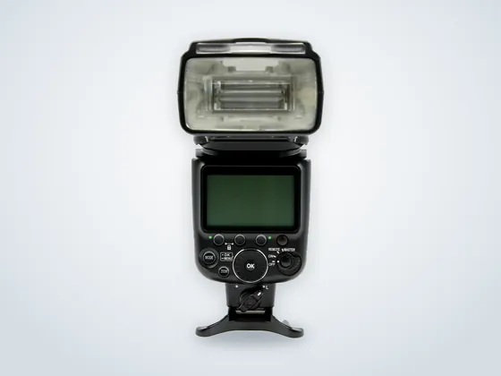

- Strona główna
- Usługi
- Lampy błyskowe
Naprawa lamp błyskowych w Poznaniu
Lampy systemowe i studyjne do aparatów fotograficznych - diagnoza usterki, naprawa i konserwacja.

Lampy błyskowe - co robimy
Naprawiamy lampy błyskowe do aparatów fotograficznych. Zaczynamy od diagnozy usterki i omówienia z Tobą kosztu naprawy.
Naprawiamy też inny osprzęt fotograficzny oraz rzutniki. Na wykonane naprawy udzielamy gwarancji.
Zakres
- lampy systemowe
- lampy studyjne
- diagnoza usterki
- naprawa i konserwacja
Marki, które serwisujemy
i wiele innych - zapytaj o swój model
- Nikon
- Canon
- Sony
- Fujifilm
- Olympus
- Panasonic
- Samsung
- Pentax
- Sigma
- Tamron
- Casio
- Minolta
- HP
- Kodak
- Praktica
Jak oddać sprzęt?
Osobiście przy ul. Galileusza 8 albo pocztą lub kurierem na adres FOTOSERWIS, ul. Galileusza 8, 60-159 Poznań - najpierw zadzwoń.